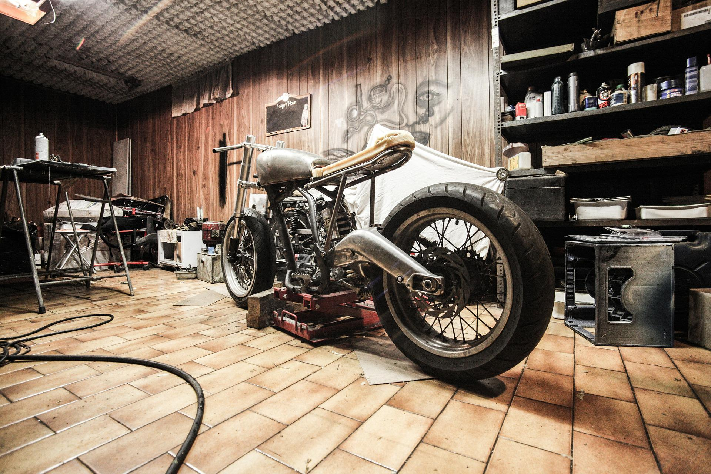

A motorcycle is a very fun and quick form of transportation. However as with all forms of transportation, some work has to be put in to keeping them up to spec. A motorcycle tends to be easier to service yourself than a car. At first, you might feel lazy and want to bring the motorcycle to the official servicing station of your brand, however if done for every miniscule servicing, you'll end up with an empty pocket. So here are some the very basics, that you can handle yourself.

First off, cleaning. Everybody probably already knows this one, but it is an important part nonetheless. Secondly, chain maitenance. At least once a month or after a rainy ride, you should clean and re-lube your chain. And finally, Tire pressure. Alot of noobs don't realise how important their tires are and they neglect the tire pressure. DON'T FORGET TO PUMP YOUR TIRES!